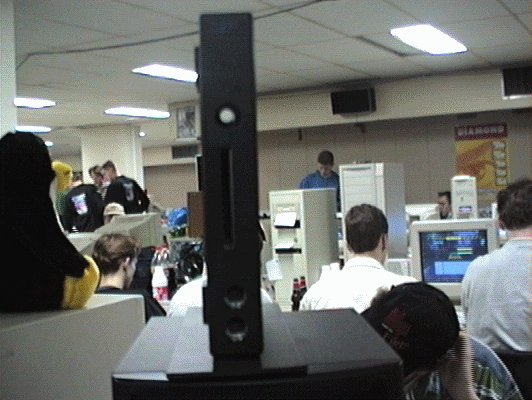

|
This page is intended to be a resource for the ppc403 development.
What`s the Status of this project. And what
are the tasks that have to be done.
What machines use a PPC 4XX
Take a look at the inside of the NC 100
|

Tux is looking the other way probably cause
this machine is not
running
linux Yet
However that`s a work in progress.
|